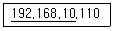
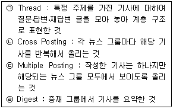
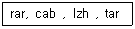
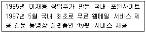

인터넷정보관리사-2급 (2010-09-04 기출문제)
1과목: 인터넷의 이해
1. 인터넷에 대한 설명으로 옳지 않은 것은?
- Windows, UNIX, Linux 등의 운영체제와 관계없이 사용할 수 있다.
- HTTP 표준 프로토콜로 연결된 네트워크의 네트워크이다.
- 전 세계 누구나 정보를 교환할 수 있는 개방형 구조이다.
- 최초의 인터넷 효시는 ARPANet이다.
(정답률: 46%)

2. 국내외의 교육기관과 정부기관 등을 상호 연결하고 효율적인 정보 교환의 수단을 제공하여 교육 및 학술연구 활동을 지원하는 전산망은?
- KREONET
- KORNET
- KREN
- NATIS
(정답률: 43%)
3. 컴퓨터 통신과 인터넷에 관련된 상세한 기술적인 절차와 규격을 일반인이 이해하기 쉽도록 제작한 문서는 무엇인가?
- I-Ds
- RFC
- IMR
- FYI
(정답률: 49%)
4. 어떤 사항에 대해 자주 질문해 오는 내용과 답변을 정리해 놓은 문서를 무엇이라고 하는가?
- IRG
- FYI
- RFC
- FAQ
(정답률: 65%)
5. 도메인 네임(Domain Name)의 선정 원칙으로 옳지 않은 것은?
- 영문 대ㆍ소문자 구별이 없으며, 하이픈(-)으로 끝날 수 있다.
- 길이는 최소 2자부터 최대 63자까지 가능하다.
- 콤마(,)나 언더바(_) 등의 기호를 사용할 수 없다.
- 전 세계적으로 중복되지 않는 고유한 주소로 사용된다.
(정답률: 52%)
6. 다음 중 우리나라에서 사용되는 2단계 도메인(Second Level Domain)의 표기가 올바른 것은?
- es(고등학교)
- re(연구기관)
- kg(초등학교)
- ne(비영리 기관)
(정답률: 55%)
7. 최상위 도메인 중 성격이 다른 하나는?
- com
- net
- kr
- org
(정답률: 60%)
8. 다음은 IPv4의 임의의 주소를 나타낸 것이다. 밑줄 친 부분이 의미하는 것은?

- 네트워크 ID
- 호스트 ID
- 클래스 ID
- 도메인 ID
(정답률: 43%)
9. 하나의 IP주소에 여러 개의 도메인 이름을 매핑시켜 여러 개의 홈페이지를 별도로 운영할 수 있는 서비스를 무엇이라 하는가?
- 리얼 웹 서비스(Real web service)
- 멀티 웹 서비스(Multi web service)
- 버추얼 웹 서비스(Virtual web service)
- 버추얼 도메인 네임 서비스(Virtual domain name service)
(정답률: 37%)
10. 여러 사람에게 동시에 같은 내용의 메일을 보낼 때 수신자에게는 다른 사람의 메일 주소가 표시되지 않게 하는 전자우편의 헤더 구성 요소는?
- To
- Cc
- Bcc
- Reply-To
(정답률: 42%)
11. 다음 중 메일을 사용하는데 사용하는 통신 규약으로 볼 수 없는 것은?
- SMTP
- POP3
- IMAP
- COMP
(정답률: 62%)
12. 특정 시스템에서 다른 시스템으로 파일을 복사하기 위한 파일 전송 프로토콜인 FTP의 전용 프로그램이 아닌 것은?
- PineTerm
- WS_FTP
- Ace FTP
- AL FTP
(정답률: 59%)
13. FTP 서비스의 설명으로 틀린 것은 ?
- 웹 브라우저를 이용할 경우 별도의 FTP 전용 프로그램을 설치할 필요가 없다.
- 텍스트 전송과 이진 파일 전송의 두 가지모드를 지원한다.
- 전송이 중단된 경우 중단 시점부터 재전송이 가능하다.
- 파일은 전송이 가능하나 폴더는 전송할 수 없다.
(정답률: 45%)
14. 다음은 유즈넷(Usenet)에서 사용하는 용어를 설명한 것이다. 올바르게 설명한 것을 모두 고른 것은?

- (ㄱ), (ㄴ)
- (ㄱ), (ㄹ)
- (ㄴ), (ㄷ)
- (ㄴ), (ㄹ)
(정답률: 22%)
15. 유즈넷의 모 그룹의 주제에 대한 설명으로 옳지 않은 것은?
- soc : 사회 과학, 종교, 문화, 역사, 사회와 관련된 주제
- talk : 취업, 어린이, 건강 등 특정 그룹에 속하기 어려운 다양한 주제
- biz : 비즈니스, 상품, 서비스와 관련된 주제
- comp : 컴퓨터 소프트웨어, 하드웨어, 언어, 시스템에 관련된 주제
(정답률: 46%)
16. 글자를 타이핑하는 시간을 줄이고 대화의 속도를 지연시키지 않기 위해 메신저 등에서 약어로 표현하는 문자를 무엇이라고 하는가?
- 이모티콘
- 두문자어
- 아바타
- 스마일리
(정답률: 44%)
17. 메신저에 새롭게 추가되고 있는 기능으로 텍스트 메시지를 사운드로 읽어주는 기능을 무엇이라고 하는가?
- TTS
- AOL
- UCC
- ICQ
(정답률: 57%)
18. 제품의 설계, 개발, 생산에서 유통, 폐기에 이르기까지 제품의 Life Cycle 전반에 관련된 데이터를 통합하고 공유, 교환하여 비용절감과 생산성 향상을 추구할 목적으로 기업 활동 전반을 전자화하는 것을 의미하는 용어는?
- EDI
- CALS
- SOHO
- CRM
(정답률: 25%)
19. 기업과 소비자간의 전자상거래로써 사이버몰을 통한 전자 소매업을 뜻하는 것은?
- B to B
- B to C
- G to B
- G to C
(정답률: 63%)
20. 인터넷 상에서 주민등록번호를 대신하여 신분 확인을 위해 사용할 수 있는 식별번호를 무엇이라고 하는가?
- i-PIN
- SET
- STT
- PGP
(정답률: 73%)
21. 데이터베이스 제작자의 권리는 데이터베이스의 제작을 완료한 때부터 발생하며, 그 다음 해 부터 기산하여 몇 년간 존속되는가?
- 5년
- 10년
- 30년
- 50년
(정답률: 39%)
22. 다음 중 저작권법에 의해 보호받을 수 있는 저작물에 해당하는 것은?
- 조례, 규칙
- 국가 또는 지방자치단체의 고시ㆍ공고
- 사실을 전달하는 시사보도
- 건축물ㆍ건축을 위한 모형 및 설계도서
(정답률: 44%)
23. 전자문서의 안전성과 신뢰성을 확보하고 그 이용을 활성화하기 위하여 전자서명에 관한 기본적인 사항을 정함으로써 국가 사회의 정보화를 촉진하고 국민생활의 편익을 증진을 목적으로 제정한 법은 무엇인가?
- 전자서명법
- 개인정보 보호법
- 저작권법
- 프로그램 보호법
(정답률: 53%)
24. FTP를 사용할 때 지켜야 할 네티켓으로 가장 타당하지 않은 것은?
- 파일을 송ㆍ수신할 때는 시간 절약을 위해 업무 시간에 하는 것이 좋다.
- 파일을 업로드 할 때는 사전에 바이러스 검사를 한다.
- 상업용 프로그램을 업로드하지 않는다.
- 필요한 자료만 다운로드 한다.
(정답률: 60%)
25. 다음 중 유해정보 차단과 가장 관련이 없는 것은?
- 그린 I-Net 서비스
- MIRC
- NCAPatrol
- YOUTH KEEPER
(정답률: 50%)
26. IRC 사용 시에 지켜야 할 네티켓으로 가장 타당하지 않은 것은?
- 만나고 헤어질 때는 간단하게 인사를 나눈다.
- 대화 속도를 빠르게 하기 위하여 가능하면 약자를 많이 사용한다.
- 너무 길지 않은 문장을 사용하도록 한다.
- 다른 사람의 사생활을 침해할 수 있는 질문은 가급적 자제한다.
(정답률: 39%)
27. 인터넷에서 주로 프리웨어 프로그램을 다운받아 설치할 때 자동으로 함께 설치되며, 사용자의 각종 개인정보를 유출시키는 소프트웨어 및 프로그램을 무엇이라고 하는가?
- 쉐어웨어 (Shareware)
- 스파이웨어 (Spyware)
- 미들웨어 (Middleware)
- 그룹웨어 (Groupware)
(정답률: 70%)
28. 리눅스(Linux)에 대한 설명으로 옳지 않은 것은?
- 유닉스의 간이 버전인 미닉스(Minix)를 기반으로 개발된 운영체제이다.
- 멀티 플랫폼, 뛰어난 이식성, 네트워크 기능, 다양한 인터넷 프로토콜을 지원한다.
- 파일 구성, 시스템의 기능, 핵심 커널 부분은 모두 유닉스를 기반으로 한다.
- 1991년 핀란드 대학생 Linus Torvalds에 의해 개발된 소스가 공개된 운영체제이다.
(정답률: 10%)
29. 다음 파일명의 확장자가 나타내는 프로그램의 종류는?

- 실행 프로그램
- 라이브러리 프로그램
- 압축 프로그램
- 오피스 프로그램
(정답률: 53%)
30. 다음 중 압축 프로그램에 대한 설명으로 올바르지 않은 것은?
- 파일을 압축하게 되면 파일의 크기를 줄일 수 있다.
- 여러 개의 파일을 하나로 묶을 수 있어 데이터의 백업과 관리가 용이하다.
- 네트워크를 통한 파일 전송에 트래픽을 줄이는 장점이 있다.
- 국산 압축 프로그램인 알집은 게스트소프트가 개발하였다.
(정답률: 71%)
31. 인터넷 전용 회선의 종류에 따른 채널수의 연결이 잘못된 것은?
- T1 : 24개
- E1 : 60개
- T2 : 93개
- T3 : 700개
(정답률: 43%)
32. 다른 기종 간의 네트워크를 연결하는 장비로, 인터넷에서 물리적 망들을 상호 연결하고 데이터 전송의 최적 경로를 설정해주는 네트워크 장비는?
- 브리지(Bridge)
- 허브(Hub)
- 라우터(Router)
- 게이트웨이(Gateway)
(정답률: 42%)
33. 아래 그림은 윈도우즈 XP 운영체제에서 네트워크를 설정하는 화면을 나타낸 것이다. 인터넷 프로토콜(TCP/IP)에서 네트워크 환경을 등록 할 때 필요한 정보가 아닌 것은?
- IP 주소
- 서브넷 마스크
- 게이트웨이
- NetBEUI
(정답률: 58%)
2과목: 인터넷 자원 탐색
34. 케이블 TV망을 이용한 인터넷 접속에 대한 설명으로 틀린 것은?
- 케이블 TV망이 설치된 지역에서만 서비스가 가능하다.
- FDSU라고 불리기도 한다.
- 동시 접속자의 수가 많아지면 속도가 저하된다.
- 다운로드 속도에 비하여 업로드 속도는 다소 느린편이다.
(정답률: 21%)
35. xDSL에 대한 설명으로 잘못된 것은?
- ‘디지털 가입자 회선’이라 부르기도 한다.
- 구리선을 사용하면서도 Mbps급의 전송 속도를 자랑한다.
- 반이중으로 데이터를 전송할 수 있는 기술이다.
- ADSL, HDSL, SDSL 등 여러 종류의 기술이 있다.
(정답률: 48%)
36. 다음 FTP 명령어 중 현재 디렉토리의 위치를 알기위해 사용하는 명령어는 무엇인가?
- ping
- TRACERT
- get
- pwd
(정답률: 53%)
37. URL의 기본 구성 요소에 포함되지 않는 것은?
- 프로토콜
- 포트번호
- 디렉토리명
- 키워드
(정답률: 40%)
38. 다음 중 약자가 바르지 않은 것은 무엇인가?
- WWW : World Wide Web
- URL : Uniform Resource Locator
- HTTP : Hyper Text Transfer Protocol
- CGI : Client Gateway Interface
(정답률: 59%)
39. 다음 중 HTML에서 사용되는 태그에 대한 설명으로 틀린 것은?
- <u>...</u> : 문자열을 밑줄 형식으로 출력하는 태그
- <b>...</b> : 문자열을 굵게 출력하는 태그
- <IMG SRC=""> : 그림파일을 클릭하면 페이지 이동이 가능하게 하는 태그
- <A HREF=" ">...</A> : 링크를 클릭하면 페이지 이동을 가능하게 하는 태그
(정답률: 40%)
40. 웹문서의 색상을 지정할 때 녹색을 나타내는 색상코드는 무엇인가?
- #000000
- #00FF00
- #0000FF
- #FFFFFF
(정답률: 47%)
41. 홈페이지 저작도구 중 위지윅(WYSIWYG) 기반이 아닌 것은?
- 나모 웹 에디터
- 메모장
- 프론트 페이지
- 플래쉬
(정답률: 43%)
42. 다음 중 하이퍼미디어(Hypermedia)에 대한 설명으로 옳은 것은?
- 하이퍼텍스트, 하이퍼미디어, 다른 미디어 사이를 연결하는 링크
- 문서 중간 중간에 특정 키워드를 두고 문자나 그래픽, 동화상 등을 유기적으로 결합해 만든 문서
- 정보의 저장과 관리를 위해 그래픽, 음성, 영상 등이 결합되어 있는 정보
- 디지털 컨텐츠의 저작권 보호를 위해 디지털 컨텐츠에 암호, 특정 코드 또는 패턴을 삽입하여 불법 복제를 막는 기술
(정답률: 27%)
43. 다음 중 CGI에 대한 설명으로 잘못된 것은?
- 마이크로소프트사에서 자사의 웹서버인 IIS와 Windows NT 기반에서 CGI를 할 수 있도록 만든 어플리케이션이다.
- 다른 응용 프로그램과 웹 서버 사이의 상호 동작을 가능하게 한다.
- 방명록과 게시판, 자료실 등 대화형 웹페이지 작성 시 주로 이용된다.
- 일반적인 CGI 작성 프로그램 언어로는 C, Java, Perl 등이 있다.
(정답률: 7%)
44. 다음 중 웹페이지의 본문이 작성되는 부분을 나타내는 HTML 태그(tag)는 무엇인가?
- <body>...</body>
- <head>...</head>
- <title>...</title>
- <html>...</html>
(정답률: 45%)
45. 다음 중 멀티미디어의 개념에 대한 설명으로 잘못된 것은?
- 멀티미디어 데이터는 다양하게 표현 가능한 미디어를 컴퓨터가 읽을 수 있는 형태로 표현하는 것이라고 할 수 있다.
- 멀티미디어 응용분야는 인터넷 방송 및 주문형 비디오로 극히 제한적이다.
- 멀티미디어 데이터는 저장 및 전송을 위하여 압축 알고리즘을 사용한다.
- 여러 종류의 미디어를 이용하여 정보가 표현되는 모든 것을 멀티미디어라고 한다.
(정답률: 54%)
46. 다음 중 서로 같은 형태의 파일 형식으로 짝지어진 것은?
- PCX, BMP, GIF
- ASF, MOV, JPEG
- ASF, WMF, MPEG
- WAV, AI, MP3
(정답률: 38%)
47. 다음 중 동영상 파일의 확장자로 틀린 것은?
- AVI
- MPEG
- WAV
- ASF
(정답률: 37%)
48. 다음 중 오디오 파일의 확장자로 틀린 것은?
- CDR
- FLAC
- MP3
- AAC
(정답률: 30%)
49. 웹 브라우저의 기능을 확장해 주는 외부 프로그램과 관련된 파일 형식이 올바르게 연결된 것은?
- Acrobat reader : mp3
- Windows Media Player : xls
- QuickTime : mov
- Gom player : pdf
(정답률: 56%)
50. 다음 중 실시간 멀티미디어 방송을 지원하지 않는 플러그인 프로그램은?
- Shockwave Flash
- Gom Player
- Windows Media Player
- Real Player
(정답률: 42%)
51. 다음 중 멀티미디어의 발전배경과 가장 거리가 먼 것은?
- 초고속 통신망의 대중화
- 압축 기술의 발달
- 아날로그 기술의 발전
- 효과적인 인터페이스 기술 발달
(정답률: 41%)
52. PDF 형식의 파일을 오픈 하려고 할 때 필요한 프로그램은?
- Acrobat reader
- AL FTP
- WINZIP
- DEMON
(정답률: 56%)
53. 인터넷 익스플로러 7.0에서 접속하고자 하는 사이트의 URL을 입력하고 접속된 사이트의 URL을 보여주는 곳은?
- 메뉴 표시줄
- 상태 표시줄
- 주소 표시줄
- 제목 표시줄
(정답률: 45%)
54. 인터넷 익스플로러 7.0에서 인터넷옵션에서 홈페이지로 등록해놓은 사이트로 바로 접속하고자 할 때 사용하는 표준단추는 무엇인가?
- 홈
- 뒤로
- 중지
- 새로 고침
(정답률: 64%)
55. 인터넷 익스플로러 7.0에서 웹페이지의 문자 세트를 선택할 수 있으며 전 세계 여러 나라의 문자 세트 중 하나를 지정할 수 있는 기능은 무엇인가?
- 새로 고침
- 즐겨찾기
- 동기화
- 인코딩
(정답률: 58%)
56. 인터넷에 연결된 웹서버에 저장되어 있는 하이퍼텍스트와 하이퍼미디어 정보를 불러와서 사용자의 컴퓨터 화면에 보여 주는 역할을 하는 프로그램을 무엇이라 하는가?
- 웹툰(Webtoon)
- 웹 브라우저(Web Browser)
- 웹 호스팅(Web hosting)
- 웹하드(Webhard)
(정답률: 74%)
57. 데이터를 임시로 저장해 두는 장소로 브라우저에서 사용자가 자주 찾는 웹 사이트를 매번 접속할 때마다 문서를 새로 가져오는 것을 방지하기 위해 일정량의 디스크 용량을 PC에 설정할 수 있는 것은 무엇인가?
- 쿠키(Cookie)
- 캐시(Cache)
- 스타일시트(Style Sheet)
- P2P(Peer to Peer)
(정답률: 27%)
58. 인터넷 익스플로러 7.0의 메뉴 중 [도구]-[인터넷 옵션]-[일반] 탭의 내용이 아닌 것은?
- 홈 페이지
- 팝업차단
- 임시 인터넷 파일
- 열어본 페이지 목록
(정답률: 34%)
59. 웹 브라우저를 두 개 이상 동시에 실행시킬 때 이에 대한 설명으로 맞는 것은?
- 동시에 두 개의 이상의 웹 브라우저를 실행하면 통신 속도가 약간 떨어질 수 있다.
- 서로 다른 주소의 문서를 검색 할 수 없다.
- 반드시 같은 회사의 제품의 웹 브라우저만 동시에 실행시킬 수 있다.
- 하나의 웹 브라우저에 문서 전송이 완료 되어야 다른 웹 브라우저에 문서가 전송된다.
(정답률: 66%)
60. 다음 중 웹 브라우저에 대한 설명이 틀린 것은?
- 첼로(Cello) : 미국의 코넬 대학의 토마스 브루스가 만든 웹브라우저
- 아라크네(Arachne) : 체코의 대학생이 마이클 폴락이 만든 브라우저
- 인터넷 익스플로러(Internet Explorer) : 마이크로소프트사에서 개발한 웹 브라우저
- 파이어폭스(Firefox) : 썬마이크로시스템즈사에서 개발한 웹 브라우저
(정답률: 12%)
61. 다른 브라우저에 비해 작고 가볍고 다양한 기능과 빠른 속도를 자랑하며 1990년 노르웨이에서 개발된 브라우저는 무엇인가?
- 모질라
- 오페라
- 모자익
- 삼바
(정답률: 35%)
62. 인터넷 익스플로러 7.0의 도구메뉴에서 인터넷 옵션을 클릭할 때 존재하지 하지 않는 탭은?
- 보안
- 연결
- 인코딩
- 고급
(정답률: 62%)
63. 다음 중 검색엔진이 갖추어야 할 요건에 해당하지 않는 것은?
- 데이터베이스는 많으면 많을수록 좋다
- 주기적인 업데이트를 통해 신뢰성을 제공해야 한다.
- 검색 옵션은 다양하지 않아도 된다.
- 사용자에게 편리한 인터페이스를 제공해야 한다.
(정답률: 59%)
64. 검색엔진의 구성 요소 중 인터넷 상에 있는 웹 사이트나 뉴스 그룹을 주기적으로 검색 후 자료를 정리하고 웹 서버에 데이터베이스를 구축하게 하는 프로그램은?
- Socket
- JAVA
- CSS
- Robot
(정답률: 70%)
65. 다음 중 바람직한 정보검색 방법으로 가장 적절하지 못한 것은?
- 여러 검색엔진을 사용해서 비교해 본다.
- 가능하면 키워드는 추상적으로 입력한다.
- 각 검색엔진별 도움말을 참고한다.
- 검색엔진의 특성별 검색 연산자를 적절히 사용해야 한다.
(정답률: 70%)
66. 엠파스와 한국라이코스를 인수한 SK커뮤니케이션즈에서 운영하는 검색엔진은 무엇인가?
- 네이버(www.naver.com)
- 네이트(www.nate.com)
- 파란(www.paran.com)
- Zip!(www.zip.org)
(정답률: 55%)
3과목: 인터넷 윤리
67. 검색엔진을 구성하는 3가지 요소는 무엇인가?
- 로봇, 사이트, 데이터베이스
- 로봇, 불용어, 검색엔진소프트웨어
- 로봇, 스마일리, 데이터베이스
- 로봇, 색인기, 검색엔진소프트웨어
(정답률: 69%)
68. 검색엔진에서 특정한 키워드를 입력하여 검색된 정보가 200개이고 이 중 80개의 정보가 적합한 정보로 판정되었다면 이 검색의 정확률은?
- 20%
- 40%
- 80%
- 100%
(정답률: 64%)
69. 네이버에 대한 설명 중 거리가 먼 것은?
- 지식검색 서비스를 제공한다.
- 1999년 정식 서비스를 시작하였다
- NHN에서 운영하고 있다.
- 프랑스어와 스페인어로 된 사이트를 자동으로 번역해 준다.
(정답률: 60%)
70. 정확한 정보검색을 위한 정확률과 재현율의 관계가 올바르게 표현된 것은?
- 정확률의 수치는 높고 재현율의 수치는 낮아야 한다.
- 정확률의 수치는 낮고 재현율의 수치는 높아야 한다.
- 정확률과 재현율의 수치가 둘 다 높아야 한다.
- 정확률과 재현율의 수치가 둘 다 낮아야 한다.
(정답률: 56%)
71. 다음 중 로봇(Robot)의 역할이 아닌 것은?
- 색인화 하기
- HTML 태그 체크하기
- 인기 사이트 생성하기
- 신규 사이트 체크하기
(정답률: 38%)
72. 다음 특성을 가지고 있는 검색엔진은?

- 네이버
- 파란
- 다음
- 야후
(정답률: 62%)
73. 다음 중 검색엔진 구글(Google)에 대한 설명으로 옳지 않은 것은 무엇인가?
- Google Toolbar 서비스를 제공한다.
- Google Earth 서비스를 제공한다.
- Gmail 서비스를 제공한다.
- 유즈넷 관련 서비스는 제공되지 않는다.
(정답률: 37%)
74. 총 61개의 검색 관련 특허를 가지고 있으며 웹 최초의 인터넷 기계 번역 서비스인 Babel Fish를 자랑하는 국외 검색엔진은 무엇인가?
- 라이코스(Lycos)
- 알타비스타(Altavista)
- 야후(Yahoo)
- 인포시크(Infoseek)
(정답률: 34%)
75. 사용자의 검색 의도와 질의어의 의미를 분석하여 가장 부합되는 정보를 주제별로 제공해 주는 네이트의 검색 서비스는?
- 시맨틱 검색
- 동영상 검색
- 이미지 검색
- 주소창 검색
(정답률: 40%)
76. 레리 페이지와 세르게이 브린이 만든 세계 최대의 인터넷 검색엔진으로 최근 메일을 통해 인터넷 전화시장에 진출한 검색엔진은?
- 안드로이드(Android)
- 야후(Yahoo)
- 메타크롤러(Metacrawler)
- 구글(Google)
(정답률: 37%)
77. 정보검색의 목적으로 볼 수 있는 것은?
- 각종 검색엔진의 성능을 시험하는 것
- 데이터베이스를 이해하는 것
- 대량의 정보 중 필요한 정보를 신속하고 정확하게 찾는 것
- 정보의 바다를 서핑하면서 여러 정보를 찾아 보는 것
(정답률: 44%)
78. 현재 범위 내에서 사용자가 찾고자 하는 자료에 대해 범위를 좁혀가면서 좀 더 자세히 검색하는 방법은?
- 절단 검색
- 불완전 용어 검색
- 구문 검색
- 결과내 재검색
(정답률: 39%)
79. 다음 중 정보검색의 기본 원칙에 대한 설명으로 옳지 않은 것은?
- 검색엔진 도움말의 변경 사항을 수시로 점검한다.
- 전문 DB의 검색 대상을 정확히 파악하고 검색에 임해야 한다.
- 검색 결과를 보여주는 방법이나 기능을 비교, 분석할 수 있어야 한다.
- 검색엔진은 인터넷상에 있는 모든 정보를 찾아준다.
(정답률: 58%)
80. 정보검색 시 고려할 사항으로 가장 적절하지 않은 것은?
- 검색엔진에서 지원하는 연산자의 종류와 연산기호를 정확하게 파악한다.
- 유명하거나 인기있는 검색엔진 한가지만을 이용하여 검색해서는 올바른 정보를 찾아 낼 수 없으므로 정보의 형태에 따라 적합한 검색엔진을 선택한다.
- 리키즈(Leakage)를 최소화 할 수 있도록 검색한다.
- 개비지(Garbage)를 최대화 할 수 있도록 검색한다.
(정답률: 62%)